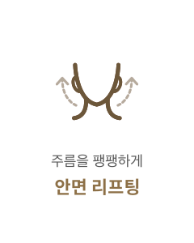

나이테를 지우자!
#목주름
교정술
-

수술 시간
1시간
-

마취방법
수면/국소마취
-

실밥제거
5~7일 후
-

내원치료
2~3회
-

회복기간
5~7일 후
목주름 교정술이란?
목주름은 본래 나이보다 더 나이들어 보이게 하는 제 2의 얼굴입니다. 노화가 진행되면서 피부가 늘어지고
주름이 심해지며 목과 턱 사이의 경계가 모호해집니다. 연세자연미는 목주름의 원인과 정도에 따라 적합한 시술로
목주름 및 지방을 해결하여 턱 선까지 개선되는 효과까지 보여드립니다.
BEFORE
AFTER
목주름교정 방법
-
01
깊고 긴 목주름의 경우
필러 -
02
턱 아래 피부가 처진 목주름
리프팅
목주름 교정술핵심 포인트
주름의 확실한 개선을 위해 연세자연미는 자세한 상담과 진단을 통해
가장 효과적인 방법으로 수술을 진행합니다.


근본적인 원인 해결
주름이 원인이 되는 근육을 사용을 제한해
주름이 더 악 화되지 않도록 합니다.

복합 시술
한 가지 시술만 고집하지 않고 환자의
주름 정도에 따라 복합적인 시술을 진행합니다.

테크닉
오랜 경험과 숙련된 기술력 으로
결과에 대한 높은 만족도를 드립니다.

함께하면좋은 시술
연세자연미성형외과는 개인의 상태에 따른 노화 증상과 원인에 맞는
여러가지 시술들을 복합적으로 진행하는 맞춤형 안티에이징 수술법으로
자연스럽게 젊어지는 아름다움을 선물해드립니다.


- 